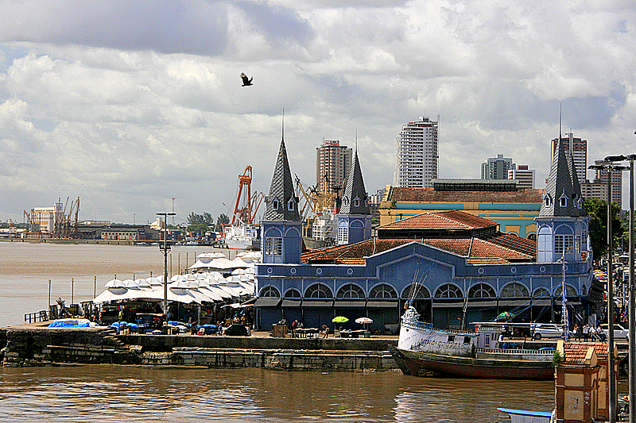
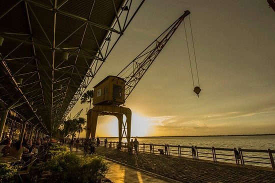
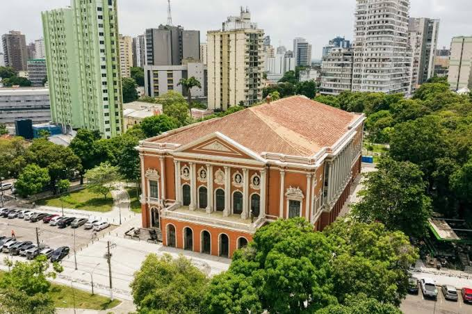
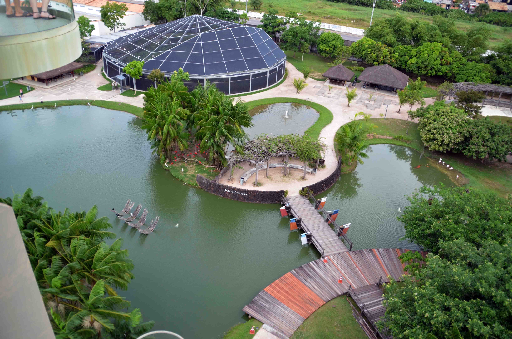

Welcome to Belém.
Discover the metropolis of the Amazon. A city where history, nature, and one of the richest gastronomies in the world meet.
Founded in 1616, Belém is the capital of the state of Pará and the main gateway to the Brazilian Amazon. Washed by the Guajará Bay, the city offers CHAGS 14 participants a unique experience, combining the rigor of scientific debates with the experience in a territory of deep indigenous heritage, European architecture from the rubber cycle, and a vibrant culture.
Culture and Tourism
Must-see places to visit during your stay. Click on the images to expand.

Ver-o-Peso Market
The largest open-air market in Latin America. A historical complex where you can find medicinal herbs, Amazonian fish, handicrafts, and the essence of Pará's culture on the riverbanks.

Estação das Docas
A restored old river port that has become a modern tourist complex. An excellent option for a late afternoon with high-end restaurants, craft beers, and a view of the bay.

Theatro da Paz
Inaugurated in 1878 during the Rubber Cycle, it is one of the most beautiful theaters in Brazil, with neoclassical architecture and materials imported from Europe at the height of the Amazonian Belle Époque.

Mangal das Garças
A zoobotanical park in the heart of the city that reproduces the different ecosystems of the Amazon, housing free-flying birds, a butterfly garden, and the Belém Lighthouse.
Pará Cuisine
Internationally recognized and awarded by UNESCO, Belém's gastronomy is a fusion of ancestral forest ingredients.
Traditional Açaí
Unlike the rest of the world, in Belém, açaí is consumed pure, without sugar, serving as the main accompaniment for fried fish, shrimp, or jerky, always with cassava flour.
Tacacá
Indigenous broth served hot in a gourd, made with tucupi (yellow juice from wild cassava), tapioca starch, jambu leaves (which cause mouth numbness), and dried shrimp.
Maniçoba
Known as the "Amazonian feijoada", it takes up to seven days to prepare, boiling ground wild cassava leaves with various smoked and salted meats.
Filhote and Tambaqui
Noble fish from the Amazonian rivers, usually served roasted over coals, in stews, or accompanied by regional sauces and jambu rice.
Sustainability and the Environment in the Amazon
Hosting CHAGS 14 in Belém places the event at the epicenter of global debates on forest conservation, bioeconomy, and the rights of indigenous peoples and traditional communities.
The Forest and the Estuary
Belém is surrounded by waters and islands that make up the estuarine floodplain ecosystem. The relationship between the city and the Amazon forest is a living laboratory of sustainable management and human adaptation.
Bioeconomy and Knowledge
The state of Pará leads initiatives transitioning to an economy based on the standing forest, valuing the sustainable extraction of açaí, native cocoa, oils, and essences managed for generations.
Traditional Protagonism
Indigenous peoples, riverside dwellers, quilombolas, and extractivists are the historical guardians of sociobiodiversity. The conference acts as a bridge to integrate these ancestral knowledges into global scientific discussions.